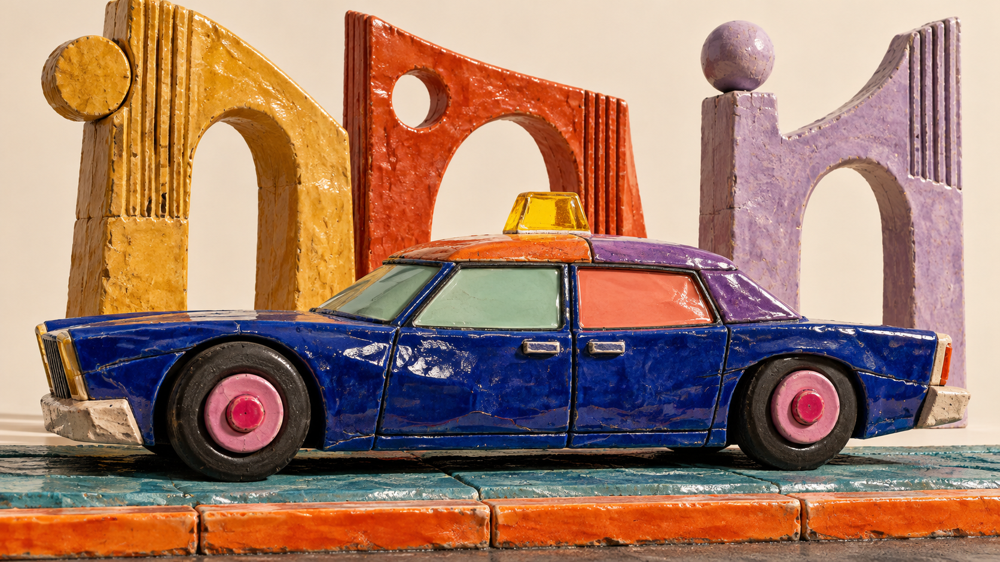
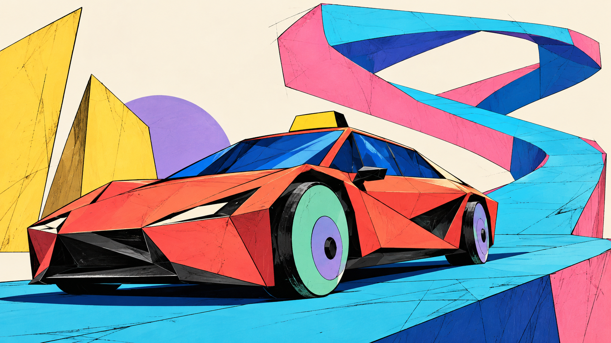

TaxiMobile · Art direction reset · 14 October 2026 · Work in progress
Identity. Not a recolor.
Expressive interfaces, layered edges, strong type and authored motion. The owner likes these graphic grammars without the main illustration; this pass follows that direction.
01 / Three art worlds
Form. Rhythm. Character.
The interface treatments below are the promising direction. The large vehicle illustrations are not selected. Compare the three grammars without artwork first.
Earlier illustration studies and their defects · optional archive

A · Glazed machine
A taxi you could touch.
Cracked glaze, exaggerated wheel hubs, dense painted surfaces. Stop-motion cadence. Controls take a broad, grooved, tactile form.
Needs refinement: the vehicle is still too close to a familiar vintage sedan. A model artist must own its proportions and silhouette.
B · Street press
Ink with a pulse.
Carved edges, overprinting, bold optical rhythm. Frame-by-frame movement. Interface rules, fare typography and receipt framing feel printed.
Needs refinement: the postcard skyline and palm motifs should give way to authored local observations and a less conventional composition.

C · Folded streets
A world that bends.
Hard cel-shaded planes, drawn scratches, spatial folds. Graphic 2.5D depth. Sections open like hinged plates; functional text stays stable.
Needs refinement: this render became too much of a sports car. Keep the folded world; rework the taxi toward the separate long-low prop below.
AI-generated art studies, not final commissioned assets. These are art worlds; Forest, Orchid, Electric, Terracotta and Graphite/Lime remain proposed appearance themes. A theme does not replace this identity work.
02 / Original layered staging experiment
Space has to make sense.
R05 · Motion specimen · Synthetic content
YOUR JOURNEY
A clear route ahead.
Review your journey before requesting a taxi.
PickupCentral square
DestinationSeafront
Estimated fare35 MAD
Request taxi
Visual specimen · this action does not submit a request
No hero illustration. Only the graphic framing moves: small held material poses, print registration accents or hinged color edges. Fare, journey facts and action geometry stay fixed. The earlier vehicle prop remains an archived experiment.
Static pose · no animation running
03 / Same jobs, different graphic grammar
Folded streets inside the app.
Art direction should affect the forms around the illustration too. These four comparable compositions test welcome, fare review, active driver offer and a cash receipt. Active work and monetary text keep an immediate reading order.
Same synthetic facts across all worlds. Displayed app actions are noninteractive specimens. All 213 structural views remain in the inventory; these 12 comparative compositions test the identity before a full art-direction revision.
04 / The bar for the next identity
Recognizable in the interface.
Silhouette, materials, typography, edge treatment and motion must do the work. Recoloring the previous shell does not count.
Multiple complementary art colors, with purposeful contrast.
One authored vehicle language across 2D, 2.5D and renders.
Route, tire contact, shadows and occlusion must be coherent.
Actual controls inherit a visual grammar beyond rounded cards.
A distinctive static rest pose on every animated composition.
Not accepted yet.
The owner likes the interface treatments without the main illustrations. Preserve that preference. The new main illustrations are not a direction to force into the app.
Prior every-page coverage is retained as structural work. Its artwork is not the selected direction. After selection, revisit all 213 placement decisions under one coherent art system.